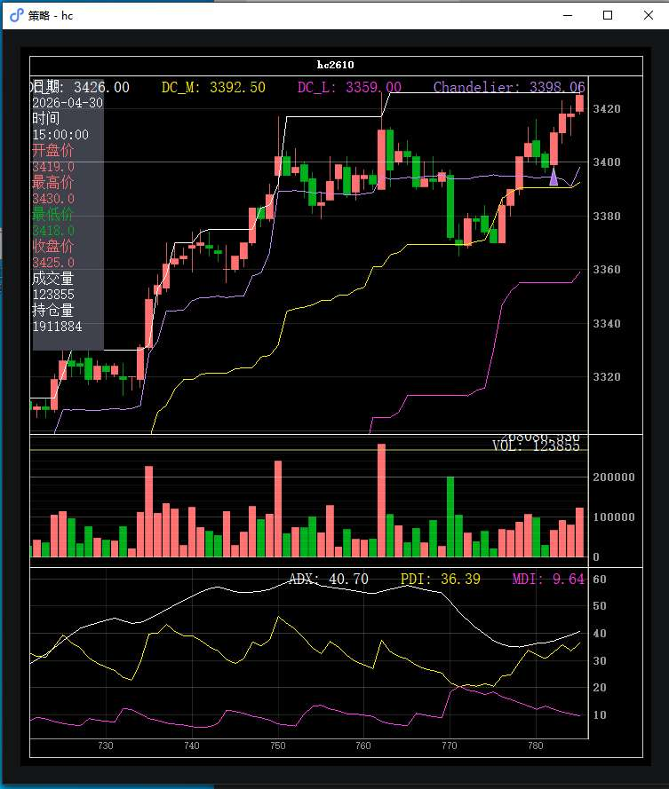
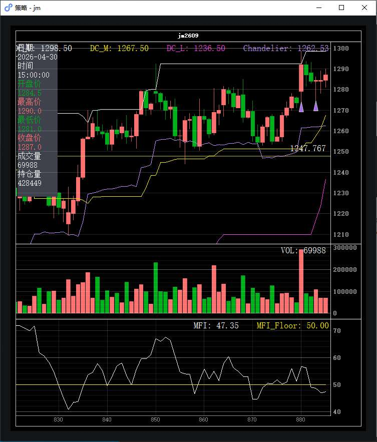
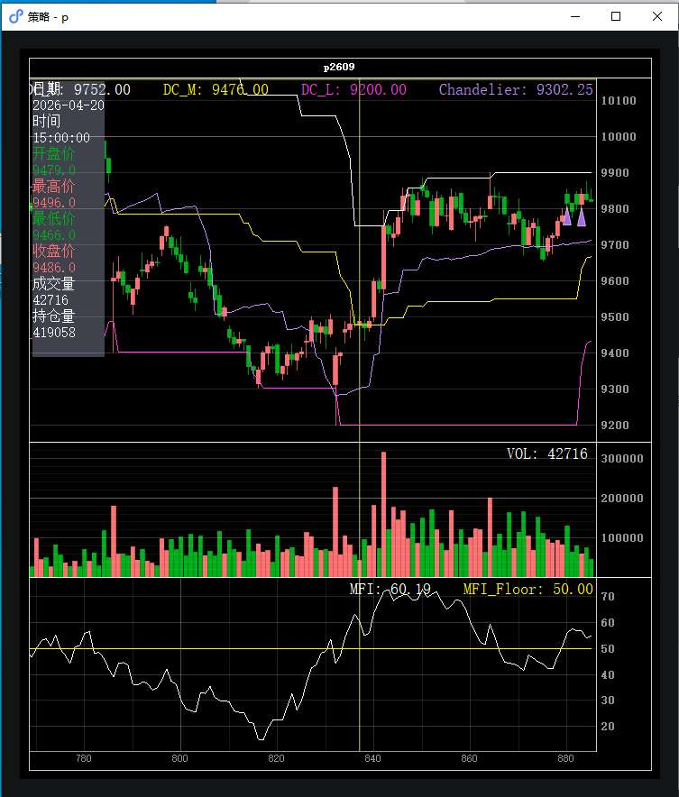
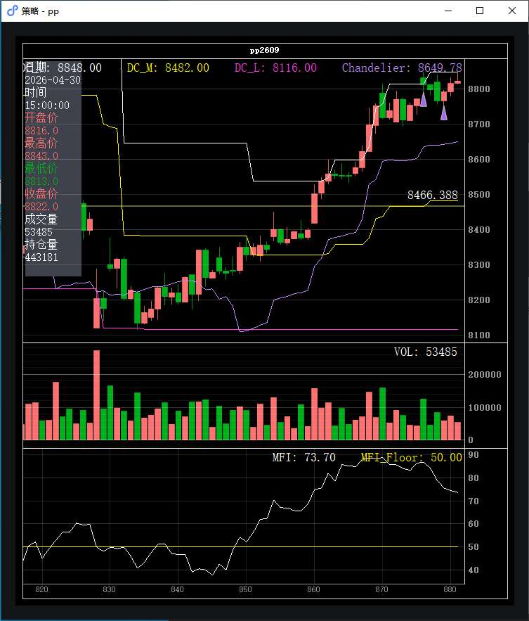

| 时间 | 品种 | 方向 | 手数 | 入场价 | 出场价 | broker盈亏 | 逐笔盈亏 | 手续费 | 净盈亏 | 状态 |
|---|---|---|---|---|---|---|---|---|---|---|
| 04-29 11:15:00 | P | 多 | 1 | 9,724.0 (前日) | 9,785.0 | ¥600.00 | ¥770.00 | ¥2.52 | ¥597.48 | 隔夜接管 |
| 04-29 14:15:05 | HC | 多 | 4 | 3,403.0 (前日) | 3,403.0 | ¥520.00 | ¥720.00 | ¥13.66 | ¥506.34 | 隔夜接管 |
| 04-29 22:00:03 | PP | 多 | 4 | 8,811.0 | 8,803.0 | ¥740.00 | ¥1,355.00 | ¥8.10 | ¥731.90 | 已平仓 |
| 04-29 22:00:06 | JM | 多 | 3 | 1,292.5 | 1,289.0 | ¥4,230.00 | ¥2,340.00 | ¥46.56 | ¥4,183.44 | 已平仓 |
| 04-29 22:00:06 | P | 多 | 2 | 9,815.0 | 9,785.0 | ¥1,200.00 | ¥1,540.00 | ¥10.07 | ¥1,189.93 | 已平仓 |
| 04-29 22:00:06 | P | 多 | 1 | 9,815.0 | 9,838.0 | ¥230.00 | ¥230.00 | ¥10.07 | ¥219.93 | 已平仓 |
| 04-30 10:00:05 | HC | 多 | 4 | 3,411.0 | 3,411.0 | — | — | ¥27.38 | ¥200.00 | 已平仓 |
| 04-30 11:15:04 | P | 多 | 2 | 9,840.0 | 9,838.0 | ¥460.00 | ¥460.00 | ¥10.07 | ¥449.93 | 已平仓 |
| 04-30 11:15:04 | P | 多 | 1 | 9,840.0 | — | — | — | ¥7.55 | ¥0.00 | 持有中 |
| 04-30 11:15:05 | JM | 多 | 2 | 1,284.5 | 1,279.5 | −¥1,560.00 | −¥1,560.00 | ¥30.82 | −¥1,590.82 | 已平仓 |
| 04-30 11:15:05 | PP | 多 | 4 | 8,793.0 | 8,800.0 | −¥130.00 | −¥130.00 | ¥8.10 | −¥138.10 | 已平仓 |
通常由 OrderMonitor escalator 触发: 挂单超时未成 → 撤单 → 重发新价位.
| 报单时间 | 品种 | 方向 | 开平 | 报价 | 手数 | 状态 |
|---|---|---|---|---|---|---|
| 04-29 22:00:00 | JM | 买 | 开仓 | 1,292.0 | 3 | 撤单 |
| 04-30 10:00:00 | HC | 买 | 开仓 | 3,410.0 | 4 | 撤单 |
| 04-30 11:15:00 | PP | 买 | 开仓 | 8,791.0 | 4 | 撤单 |
| 04-30 11:15:00 | JM | 买 | 开仓 | 1,284.0 | 2 | 撤单 |

当日 HC 主力合约整体上涨 +0.21% — 窗口起点 ¥3411.0, 最高 ¥3418.0, 最低 ¥3411.0, 收盘 ¥3418.0 (波动幅度 0.21%).
收盘指标: ADX=38.3 (强趋势, 阈值 22), PDI=35.8 > MDI=11.0 (多头主导); Donchian 通道 3355.0 ~ 3426.0, 中轨 3390.5.
开仓 (前日接管): 04-29 14:15:05 买入 4 手 @ ¥3403.0 (state.json 自昨日恢复 own_pos)
当时仓位决策: 原始信号 raw=5.00 → Carver vol target 算出 5 手 (ATR=12.2) → 目标 4 手, 当时已持 0 手.
当时信号 (V8 Donchian+ADX): close=3402.0, Donchian 上轨=3426.0, 中轨=3390.5; ADX=33.1, PDI=28.2 > MDI=15.5 — 趋势确认 ✓
平仓时间: 21:04:59 · 卖出 4 手 @ ¥3403.0 (报价 ¥3398.0, 滑点 -5.0 跳)
触发条件: 隔夜接管的持仓在新窗口内被平仓 — 可能是策略启动后立即触发的移动止损 / 硬止损 / 信号反转.
盈亏: broker 平仓盈亏 ¥520.00, 逐笔 ¥720.00, 手续费 ¥13.66
开仓时间: 10:00:05 · 买入 4 手 @ ¥3411.0
仓位决策: 原始信号强度 raw=5.00 → Carver vol target 算出 5 手 (ATR=12.6, 资金 ¥1,000,000) → apply_buffer 后目标 4 手, 当时已持 0 手.
信号详情 (V8 Donchian+ADX): close=3411.0, Donchian 上轨=3426.0, 中轨=3390.5; ADX=37.2 (阈值 22), PDI=33.2 > MDI=12.1 — 趋势确认 ✓
平仓时间: 13:32:59 · 卖出 4 手 @ ¥3411.0 (报价 ¥3406.0, 滑点 -5.0 跳)
触发条件: 移动止损 — 当前价 ¥3404.0 ≤ 移损线 ¥3405.8 (peak × (1 - trailing_pct%) 公式生成)
盈亏: 手续费 ¥27.38

当日 JM 主力合约整体下跌 -0.58% — 窗口起点 ¥1292.0, 最高 ¥1292.0, 最低 ¥1284.5, 收盘 ¥1284.5 (波动幅度 0.58%).
收盘指标: MFI=48.7 (资金流出, 阈值 50); Donchian 通道 1217.0 ~ 1298.5, 中轨 1257.8.
开仓时间: 22:00:06 · 买入 3 手 @ ¥1292.5
仓位决策: 原始信号强度 raw=3.63 → Carver vol target 算出 4 手 (ATR=12.2, 资金 ¥1,000,000) → apply_buffer 后目标 3 手, 当时已持 0 手.
信号详情 (V13 Donchian+MFI): close=1292.0, Donchian 上轨=1292.5, 中轨=1251.2; MFI=56.7 (阈值 50) — 资金确认 ✓
平仓时间: 22:11:59 · 卖出 3 手 @ ¥1289.0 (报价 ¥1286.5, 滑点 -5.0 跳)
触发条件: (未捕获到 EXEC_STOP / TRAIL_STOP 日志). broker 平仓盈亏 (¥4,230.00) 与当日 round-trip 的毛盈亏 (−¥630.00) 差异较大, 可能实际平的是隔夜接管的持仓 (state.json 自昨日恢复, CSV 不可见).
盈亏: broker 平仓盈亏 ¥4,230.00, 逐笔 ¥2,340.00, 手续费 ¥46.56
开仓时间: 11:15:05 · 买入 2 手 @ ¥1284.5
仓位决策: 原始信号强度 raw=3.17 → Carver vol target 算出 3 手 (ATR=12.0, 资金 ¥1,000,000) → apply_buffer 后目标 2 手, 当时已持 0 手.
信号详情 (V13 Donchian+MFI): close=1284.5, Donchian 上轨=1298.5, 中轨=1257.8; MFI=48.7 (阈值 50) — 资金确认 △
平仓时间: 13:31:59 · 卖出 2 手 @ ¥1279.5 (报价 ¥1277.0, 滑点 -5.0 跳)
触发条件: 移动止损 — 当前价 ¥1289.0 ≤ 移损线 ¥1289.6 (peak × (1 - trailing_pct%) 公式生成)
盈亏: broker 平仓盈亏 −¥1,560.00, 逐笔 −¥1,560.00, 手续费 ¥30.82

当日 P 主力合约整体上涨 +0.26% — 窗口起点 ¥9815.0, 最高 ¥9841.0, 最低 ¥9815.0, 收盘 ¥9841.0 (波动幅度 0.26%).
收盘指标: MFI=56.7 (资金流入强, 阈值 50); Donchian 通道 9366.0 ~ 9900.0, 中轨 9633.0.
开仓 (前日接管): 04-29 11:15:00 买入 1 手 @ ¥9724.0 (state.json 自昨日恢复 own_pos)
当时仓位决策: 原始信号 raw=2.61 → Carver vol target 算出 3 手 (ATR=66.4) → 目标 2 手, 当时已持 0 手.
当时信号 (V13 Donchian+MFI): close=9725.0, Donchian 上轨=9900.0, 中轨=9550.0; MFI=42.5 — 资金确认 △
平仓时间: 22:27:59 · 卖出 1 手 @ ¥9785.0 (报价 ¥9775.0, 滑点 -5.0 跳)
触发条件: 隔夜接管的持仓在新窗口内被平仓 — 可能是策略启动后立即触发的移动止损 / 硬止损 / 信号反转.
盈亏: broker 平仓盈亏 ¥600.00, 逐笔 ¥770.00, 手续费 ¥2.52
开仓时间: 22:00:06 · 买入 2 手 @ ¥9815.0
仓位决策: 原始信号强度 raw=4.06 → Carver vol target 算出 4 手 (ATR=64.7, 资金 ¥1,000,000) → apply_buffer 后目标 3 手, 当时已持 0 手.
信号详情 (V13 Donchian+MFI): close=9815.0, Donchian 上轨=9900.0, 中轨=9550.0; MFI=56.0 (阈值 50) — 资金确认 ✓
平仓时间: 22:27:59 · 卖出 2 手 @ ¥9785.0 (报价 ¥9775.0, 滑点 -5.0 跳)
触发条件: (未捕获到 EXEC_STOP / TRAIL_STOP 日志). broker 平仓盈亏 (¥1,200.00) 与当日 round-trip 的毛盈亏 (−¥600.00) 差异较大, 可能实际平的是隔夜接管的持仓 (state.json 自昨日恢复, CSV 不可见).
盈亏: broker 平仓盈亏 ¥1,200.00, 逐笔 ¥1,540.00, 手续费 ¥10.07
开仓时间: 22:00:06 · 买入 1 手 @ ¥9815.0
仓位决策: 原始信号强度 raw=4.06 → Carver vol target 算出 4 手 (ATR=64.7, 资金 ¥1,000,000) → apply_buffer 后目标 3 手, 当时已持 0 手.
信号详情 (V13 Donchian+MFI): close=9815.0, Donchian 上轨=9900.0, 中轨=9550.0; MFI=56.0 (阈值 50) — 资金确认 ✓
平仓时间: 13:31:59 · 卖出 1 手 @ ¥9838.0 (报价 ¥9828.0, 滑点 -5.0 跳)
触发条件: 移动止损 — 当前价 ¥9785.0 ≤ 移损线 ¥9786.6 (peak × (1 - trailing_pct%) 公式生成)
盈亏: broker 平仓盈亏 ¥230.00, 逐笔 ¥230.00, 手续费 ¥10.07
开仓时间: 11:15:04 · 买入 2 手 @ ¥9840.0
仓位决策: 原始信号强度 raw=4.31 → Carver vol target 算出 4 手 (ATR=61.8, 资金 ¥1,000,000) → apply_buffer 后目标 3 手, 当时已持 0 手.
信号详情 (V13 Donchian+MFI): close=9841.0, Donchian 上轨=9900.0, 中轨=9633.0; MFI=56.7 (阈值 50) — 资金确认 ✓
平仓时间: 13:31:59 · 卖出 2 手 @ ¥9838.0 (报价 ¥9828.0, 滑点 -5.0 跳)
触发条件: 移动止损 — 当前价 ¥9785.0 ≤ 移损线 ¥9786.6 (peak × (1 - trailing_pct%) 公式生成)
盈亏: broker 平仓盈亏 ¥460.00, 逐笔 ¥460.00, 手续费 ¥10.07
开仓时间: 11:15:04 · 买入 1 手 @ ¥9840.0
仓位决策: 原始信号强度 raw=4.31 → Carver vol target 算出 4 手 (ATR=61.8, 资金 ¥1,000,000) → apply_buffer 后目标 3 手, 当时已持 0 手.
信号详情 (V13 Donchian+MFI): close=9841.0, Donchian 上轨=9900.0, 中轨=9633.0; MFI=56.7 (阈值 50) — 资金确认 ✓
当前状态: 持仓中, 未触发平仓信号, 持有 1 手 @ ¥9840.0 过夜.

当日 PP 主力合约整体下跌 -0.24% — 窗口起点 ¥8812.0, 最高 ¥8812.0, 最低 ¥8791.0, 收盘 ¥8791.0 (波动幅度 0.24%).
收盘指标: MFI=75.6 (资金流入强, 阈值 50); Donchian 通道 8116.0 ~ 8848.0, 中轨 8482.0.
开仓时间: 22:00:03 · 买入 4 手 @ ¥8811.0
仓位决策: 原始信号强度 raw=5.00 → Carver vol target 算出 5 手 (ATR=67.4, 资金 ¥1,000,000) → apply_buffer 后目标 4 手, 当时已持 0 手.
信号详情 (V13 Donchian+MFI): close=8812.0, Donchian 上轨=8814.0, 中轨=8465.0; MFI=86.9 (阈值 50) — 资金确认 ✓
平仓时间: 09:08:59 · 卖出 4 手 @ ¥8803.0 (报价 ¥8799.0, 滑点 -4.0 跳)
触发条件: (未捕获到 EXEC_STOP / TRAIL_STOP 日志). broker 平仓盈亏 (¥740.00) 与当日 round-trip 的毛盈亏 (−¥160.00) 差异较大, 可能实际平的是隔夜接管的持仓 (state.json 自昨日恢复, CSV 不可见).
盈亏: broker 平仓盈亏 ¥740.00, 逐笔 ¥1,355.00, 手续费 ¥8.10
开仓时间: 11:15:05 · 买入 4 手 @ ¥8793.0
仓位决策: 原始信号强度 raw=5.00 → Carver vol target 算出 5 手 (ATR=64.2, 资金 ¥1,000,000) → apply_buffer 后目标 4 手, 当时已持 0 手.
信号详情 (V13 Donchian+MFI): close=8791.0, Donchian 上轨=8848.0, 中轨=8482.0; MFI=75.6 (阈值 50) — 资金确认 ✓
平仓时间: 13:48:00 · 卖出 4 手 @ ¥8800.0 (报价 ¥8796.0, 滑点 -4.0 跳)
触发条件: 移动止损 — 当前价 ¥8801.0 ≤ 移损线 ¥8805.5 (peak × (1 - trailing_pct%) 公式生成)
盈亏: broker 平仓盈亏 −¥130.00, 逐笔 −¥130.00, 手续费 ¥8.10